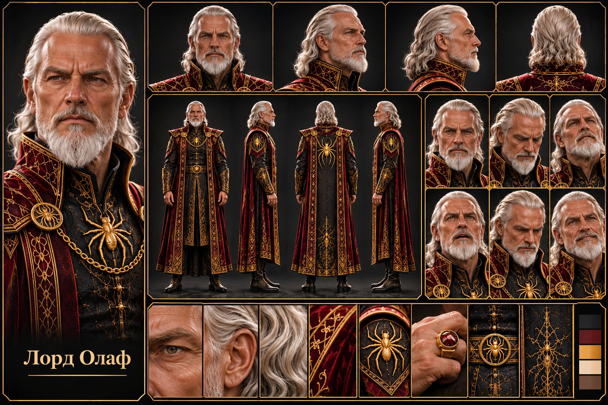

ОСНОВНА ІНФОРМАЦІЯ
Командувач повітряних сил
Лорд Олаф відповідає за авіацію військ Верховного. Він керує введенням бойових літаків через портали, розподіляє групи за напрямками та координує удари по наземних силах і оборонних об’єктах. У бойовій роботі діє зібрано й не поспішає кидати всі сили в атаку одночасно.
Титул: лорд
Посада: командувач авіацією
Підпорядкування: Верховний
Взаємодія: лорд Тайлес, лорд Алістер, лорд Темний
ДЕНЬ 13 · РАДА ЛОРДІВ
Пам’ять про втрату
Під час ради Верховний нагадує Олафу про долю його сина. Олаф відповідає коротко й твердо: він пам’ятає. Ця розмова показує, що протистояння з нульовиками для нього має особисту ціну.
ДЕНЬ 17 · АВІАЦІЯ
Удар із повітря
Отримавши наказ Верховного, Олаф розгортає авіацію через портали. Він не дозволяє пілотам одразу атакувати всією масою: групи розходяться заданими курсами, набирають висоту й займають позиції. Удари з різних напрямків мають змусити протиповітряну оборону розподіляти сили між кількома загрозами.
Пізніше Верховний наказує зосередити авіацію на місті-шляху й виснажувати його захист, не розпорошуючи сили на другорядні цілі.
ДЕНЬ 19 · ЦІНА ПОРАЗКИ
Наслідки кампанії
На нараді після поразки Олаф доповідає, що вціліло не більше п’яти відсотків авіапарку, а досвідчених пілотів бракує навіть для використання тих машин, що залишилися. Він говорить рівно, однак присутні знають: такий спокійний тон означає, що Олаф розлючений до краю. Навіть Темний остерігається його в такі хвилини.